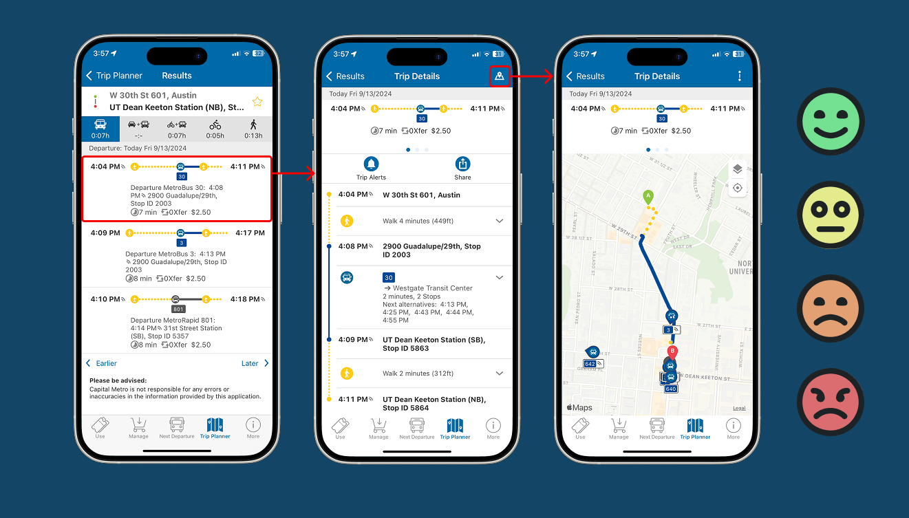

September – December 2024
A usability study conducted on the app for CapMetro, Austin's premier public transportation service. Consists of a heuristic evaluation, competitive analysis, comprehensive user testing, and final insights and recommendations.
October – December 2023
An indie dungeon crawler video game developed with a team of four at UT Austin. Play as a creature born out of radioactive waste and attempt to escape from an abandoned laboratory crawling with radioactive enemies! Features a procedurally generated map so that no two runs are exactly the same.
April 2023
A website designed to teach the user about the 20th century philosophical movement of existentialism. Features a text roleplaying game that simulates a human life and a page summarizing the contributions of major figures within the movement.
2020 – Present
A collection of digital and traditional works of art and visual design.